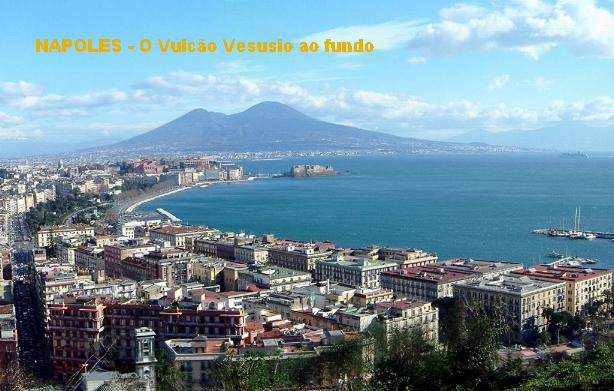
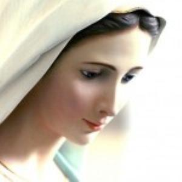
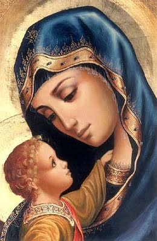
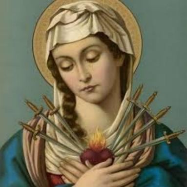

NASCIMENTO ILUMINADO
A FAMÍLIA
Afonso Maria nasceu no Bairro Marianella, na cidade de Nápoles, Itália, no dia 29 de Setembro de 1696. Seu pai era o senhor Giuseppe de Ligório, Almirante das Galeras do Rei de Nápoles, um militar exigente e inflexível, que administrava com poder e energia todos os navios do reino, conforme o hábito militar.
Sua mãe era a senhora Ana Cavalieri, uma mulher delicada, prendada e de fina educação. O casal pertencia à nobreza italiana, e apesar de possuírem temperamentos totalmente opostos, se uniram perfeitamente formando um lar feliz e abençoado por DEUS, sobretudo, porque o casal era católico praticante e tinha grande amor e respeito pelo Santíssimo Sacramento.
Dois dias depois de nascido foi Batizado na Igreja de NOSSA SENHORA VIRGEM, em Nápoles.

Pela própria organização da família, Afonso foi criado por sua mãe, e dela recebeu uma fina e prudente educação, edificando um caráter correto, responsável, educado e amoroso.
E também, através dos ensinamentos maternos teve a felicidade de conhecer JESUS e NOSSA SENHORA, fazendo crescer em seu espírito a incandescente chama do amor de DEUS, que desde jovem, envolveu a sua vida.
Sua mãe era tão religiosa e tão apaixonada pela VIRGEM MARIA, que em três filhos colocou o nome da MÃE DE DEUS (MARIA).
Afonso Maria não era o único filho de Giuseppe e Ana, havia mais seis irmãos: Bento, Caetano, Maria Luísa, Maria Ana, Hércules e outro, que a história não gravou o nome, provavelmente pelo fato de ter morrido muito cedo, com poucos meses de vida.
EXPERIÊNCIA ESTRANHA
Aos 12 anos de idade Afonso viveu uma experiência estranha com um grupo de colegas. Insistentemente foi convidado por eles, a participar de um jogo de baralho. Alegando não conhecer o jogo e também, não se sentindo com disposição, rejeitou o convite. Mas seus companheiros queriam tanto a sua companhia que insistiram vigorosamente, e ele acabou aceitando. Aprendeu com facilidade o arranjo das cartas que eles lhe ensinaram, e assim, começaram a jogar. Com inteligência e esperteza, venceu todas as rodadas, deixando os seus companheiros admirados e alguns até bem desconfiados, imaginando que ele tinha “fingido” e dado um “golpe” neles, quando afirmava que não sabia jogar. Isto porque, na realidade, ele jogou muito bem e com muita sorte, ganhando o dinheiro de todos. Por isso, a reação dos companheiros foi imediata, passaram a falar mal dele e a nomeá-lo com palavrões feios e pesados. Afonso se aborreceu e com muita raiva, jogou o dinheiro em cima deles e regressou a sua casa.
Naquela época, na Europa, era comum o jovem escolher a carreira militar, isto porque, na verdade, ninguém queria estudar. Entretanto, na Itália, e principalmente na corte de Nápoles, tanto a carreira militar como os estudos, eram considerados com respeito, interesse e atenção.
O senhor Giuseppe, que era um militar tarimbado e cheio de ambições, logo esboçou um traçado para a vida do seu filho. Viu que ele não queria ser militar, então muito ligeiro o encaminhou para os livros.
Desse modo, Afonso começou a estudar muito cedo, e para que o seu desenvolvimento acontecesse efetivamente, seu pai lhe proporcionou ótimos professores nas diversas matérias. Afonso se aplicou nos estudos e pode responder a dedicação paterna com um excelente aproveitamento, além de revelar desde menino, uma inteligência aguçada e uma memória fora do comum. Todos o admiravam.
Todavia aconteceu, que embora amante dos estudos, Afonso tornou-se também um apaixonado jogador de cartas, talvez estimulado por aquela primeira conquista em sua juventude. É provável que a vaidade subiu-lhe a cabeça e lhe encheu de esperanças a conseguir um dinheiro fácil. E tanto se aplicou no jogo, que certo dia não percebeu que as horas tinham passado ligeiras e já era madrugada. Voltou para casa e entrou de “fininho”, sem fazer qualquer barulho. Todavia, entrando no seu escritório não encontrou mais os seus livros sobre a mesa, lá estavam dezenas de cartas de baralho espalhadas. Ficou assustado. Seu pai entrou e foi logo dizendo: “Esses são os seus livros! Esses são os autores que tanto encanto lhe traz!...”
Ele aprendeu a lição e nunca mais aconteceu semelhante distração.
OUTROS DIVERTIMENTOS

E por isso mesmo, a sua vida não ficou restrita e estacionada nas representações teatrais, ele tinha muito talento, o qual aplicava prioritariamente nos estudos e agora também, como lazer, começou aplicá-lo na pintura. E pintou muitos quadros... Pinturas bonitas, atraentes, e no estilo clássico. Muitas delas ainda existem bem guardadas e conservadas até hoje. Depois quis descansar um pouco da pintura, então veio a musica. Que talento! Aos poucos nasceram as suas composições, eram músicas sacras que também permanecem na Igreja até os dias de hoje, sendo algumas delas cantadas com entusiasmo nas Igrejas de Nápoles. Compôs um admirável “Dueto da Paixão do SENHOR”, também um cântico de Natal, que se tornou o mais popular da Itália: “Tu scendi dalle stelle” (Do Céu estrelado viestes), que foi traduzido para o italiano pelo Papa Pio IX, e numerosos outros hinos.
Mas estes dons não atrapalhavam a sua vida, realmente completavam o seu ideal.
PROFISSÃO ADVOCACIA
Seu pai queria vê-lo um advogado vibrante nos tribunais. E com este objetivo, aos 12 anos de idade, no dia 25 de Outubro de 1708, foi matriculado na Escola de Direito de Nápoles.
Afonso começou os estudos sob a forte marcação vigilante do seu pai, que queria vê-lo um advogado de valor brilhando no Tribunal do Reino de Nápoles. Por isso não lhe dava folga.
Os anos passaram ligeiros. Agora Afonso já está com 16 anos de idade. Tão extraordinário é o seu talento, tão brilhante e aguçada é a sua inteligência, que com essa idade se apresentou diante do Conselho Universitário para defender a tese de doutorado. Ele a defende de modo singular, vigoroso e impecável, deixando os examinadores e a platéia, verdadeiramente admirada e impressionada com o talento daquele jovem rapaz. Falava com sabedoria e plena segurança sobre as leis na presença daqueles senhores que eram experientes e conhecedores profundos da advocacia. Todos, sem exceções, aplaudiram calorosamente Afonso Maria, no final da defesa da sua tese.
Foi aprovado com louvor, e, portanto, estava pronto a defender qualquer causa nos tribunais.
Todavia, pela Lei vigente, ninguém podia receber o título de Advogado antes dos 20 anos de idade, e Afonso estava com apenas 16 anos!
Mas, em face do notável desempenho do jovem Afonso Maria, por um favor especial do Rei de Nápoles, Filipe V, a dificuldade foi contornada. Ele soube da façanha de Afonso e resolveu premiar o seu talento. No dia 10 de Janeiro de 1713 saiu o decreto real concedendo ao jovem Afonso o direito de exercer a profissão de Advogado e de vestir a toga.
No dia 21 do mesmo mês, em cerimônia solene, ele recebeu os títulos de Doutor em Direito e de Advogado do foro de Nápoles, sendo publicamente revestido da toga, que, conforme ele mesmo contou mais tarde: “... se arrastava pelo chão, provocando risos e admiração em todos” (era muito larga e comprida, para ele que era tão pequeno e franzino).
Feliz com os acontecimentos em sua vida, Afonso recordava as colunas básicas da sua criação: de seu pai Giuseppe herdou um incansável espírito de luta na busca de um ideal; da sua mãe Ana, apreendeu uma sensibilidade extremada e uma profunda delicadeza de consciência, além das preces que rezava diariamente. Verdadeiramente a Oração sempre o acompanhou na sua existência e era um farol luminoso e brilhante em todo o momento de escuridão e de dúvida que seu espírito atravessava.
NO EXERCÍCIO DA PROFISSÃO
O trabalho é diário, sem hora
marcada para acionar uma providência ou agilizar uma defesa. Os meses e anos se
sucedem na fria indiferença do tempo 
Mas, um drama interno nasce e começa a crescer no interior de Afonso, deixando-o intranquilo e impaciente. No foro todo o dia nada escapava ao seu espírito observador. Acompanhava os seus processos e mantinha sempre acesa uma decidida luta contra a injustiça, contra os inocentes que eram condenados, e uma série de fatos que iam amadurecendo o seu espírito jovem. Cada dia observa que vai conquistando mais admiração e mais fama, mas também começa a experimentar as primeiras decepções da profissão, se revoltando diante das injustiças praticadas por alguns colegas, envergonhando-se diante da venalidade de outros e tem momentos de grande angústia e profunda tristeza ao observar tanta desonestidade.
Às vezes para fugir das armadilhas da própria profissão, se abriga na oração e na meditação da Palavra Divina. É justamente em DEUS que ele busca o caminho do direito e da justiça. É na participação dos Sacramentos que ele encontra forças para ser justo e lutar pela moralização da sua profissão. Ajuda os pobres e os doentes necessitados, com a convicção de que aquela é a Vontade e o desejo do SENHOR.
Certo dia, triste e desiludido com a profissão e com o procedimento dos seus colegas, escreveu a um deles que era seu amigo:
“Nossa vida está cercada de perigos. Talvez estejamos caminhando para a perdição eterna. A carreira de Advogado não me agrada e não me convém. Cedo ou tarde vou abandoná-la, para garantir a salvação da minha alma, porque isto é para mim o essencial”.
Os desacertos acontecidos no foro, às injustiças que ali se multiplicavam começaram a esmagar terrivelmente a sua sensibilidade. Com tristeza e angústia, vê a facilidade com que os seus colegas de profissão aceitam a defesa de causas más e injustas. Tudo por dinheiro, para aproveitar das situações que acontecem! Fica indignado ao observar a negligência e falta de cuidado de alguns profissionais, que nem se preocupam em estudar os pormenores dos processos, a fim de projetar uma defesa sólida e eficaz. Tudo isto o aborrecia, e então, ele decidiu estabelecer uma norma de procedimento, para a sua vida profissional:
1 – Nunca aceitar uma causa má ou injusta.
2 – Nunca usar de meios ilícitos na defesa de uma causa.
3 – Não obrigar os clientes a despesas inúteis.
4 – Colocar na defesa de uma causa tanto empenho e interesse como se fosse a minha causa.
5 – Estudar a fundo todos os pormenores de um processo.
6 – Não prejudicar o cliente com delongas ou descuidos;
7 – Implorar sempre o auxílio de DEUS, o sumo protetor da Justiça.
8 – Não aceitar causas impossíveis, ou seja, superiores ao meu talento, ou que exijam mais tempo do que aquele que lhes posso consagrar.
9 – Respeitar a Justiça e a Equidade, como se fossem as pupilas dos meus olhos.
ESPOSA MILIONÁRIA PARA O FILHO
Por ser o filho primogênito, Afonso tinha a preferência do seu pai Giuseppe, que embora fosse um homem cristão, também era muito vaidoso, interesseiro e ambicioso, qualidades que realçavam no seu quotidiano, e que por isso mesmo, o conduzia a sonhar com uma posição de realce para o filho, sobressaindo no meio dos grandes do Reino. E com este pensamento, Giuseppe queria arranjar um casamento ideal para o filho. A moça era Teresa, filha de um Príncipe seu amigo. Era uma moça talentosa, repleta de notáveis virtudes, além de ser herdeira de uma vultosa fortuna, por ser a única filha. Entretanto, este era o desejo de Giuseppe, faltava conversar e acertar tudo com Afonso, que não sabia de nada, e apenas olhava aquelas pessoas como amigos da família.
Acontece que a mãe de Teresa ficou grávida e deu a luz a um filho homem, que passou a ser o herdeiro da fortuna. Que decepção para o senhor Giuseppe! E assim, com muita sabedoria e manha, começou a se distanciar de Teresa e procurar outra moça rica para o seu filho. Afonso continuava inocente, não sabendo de nada.
Giuseppe, cheio de ambição, no vaivém pelos palácios dos milhonários, continuava especulando para encontrar a moça rica para o seu filho. E então, ficou sabendo que o irmãozinho de Teresa, com poucos meses de vida, tinha falecido. E agora? Dom Giuseppe homem interesseiro e oportunista não pensou duas vezes, foi procurar os pais de Teresa. Ela desapontada com a atitude do senhor Giuseppe não aceitou e se revoltou contra o procedimento dele, classificando-o de mentiroso e trapaceiro. Triste e desiludida com aquelas cruéis manobras que brincavam com os seus sentimentos, resolveu entrar num Convento e se fez religiosa.
O senhor Giuseppe não se perturbou com aquela reação. Sendo um homem frio e calculista, seguiu indiferente na busca da noiva ideal para o seu filho, agora lançando Afonso nas muitas festas, em bailes e saraus que aconteciam, deixando-o em evidência para “balançar” o coração das meninas. A ambição de Dom Giuseppe era muito grande, e por isso, ele não se importava de sacrificar o próprio filho para atingir os seus objetivos.
COMEÇOU A GOSTAR DOS BAILES
A verdade é que a principio o rapaz comparecia as Festas que o pai lhe enviava, muito a contragosto. Mas na continuidade começou a gostar dos ambientes e a sentir prazer nas farras. Afonso já não perdia mais nenhuma festa, procurava estar em todas. Em consequência, não tinha tempo para mais nada: ora estava em excursões com os amigos, ora em teatros, em algum baile ou num jogo. A ambição pelo divertimento foi gradativamente apagando o fervor religioso, criando uma grande confusão na cabeça dele, e aos poucos, ele foi se distanciando das orações, dos sacramentos e das obras de misericórdia que praticava em beneficio dos mais necessitados.
O tempo corria inexoravelmente o seu caminho, indiferente à vida da humanidade. E por isso mesmo, às vezes Afonso ouvia a voz de DEUS, sentia uma forte angústia no coração e até chorava, mas as gritarias das festas o ensurdeciam.
AUXÍLIO PRECIOSO

RETIRO ESPIRITUAL
Aqueles dias de recolhimento e completo silêncio reabriram os seus olhos e removeu as correntes que travavam o seu espírito. Percebeu o precipício para onde caminhava e sentiu no coração a lembrança do seu antigo fervor. E decidiu voltar. Mas como é difícil retornar ao caminho primitivo! Todavia, a graça de DEUS se manifestou com irresistível poder e ele se deixou levar por ela. Recomeçou a sua vida de oração e participação nos Sacramentos. Aprendeu novamente a ficar surdo ao vozerio do mundo para poder ouvir no silêncio, a Voz de DEUS que fala.
Novamente Afonso foi para outro retiro, o qual marcou indelevelmente a sua existência, por que coisas concretas começaram a ser definidas e decisões foram tomadas. Sobretudo, duas decisões muito importantes: aquela de deixar o mundo definitivamente, e de transferir os seus direitos de primogênito a seu irmão Hercules. Quando? DEUS iria lhe mostrar o momento mais propício.
O senhor Giuseppe, ditador acostumado à vida de quartel, desta vez não sabia de nada do que estava acontecendo no interior de Afonso. Por isso, continuava firme na caça de uma dama bem rica e de pais influentes para ser a futura esposa do filho.
Afonso Maria resolveu se aproximar do pai para lhe revelar a sua verdade. O velho ficou vermelho de tão irritado, e explodindo numa reação violenta deu uma bofetada no rosto do seu filho.
O rapaz ficou sentido e envergonhado. Afastou-se imediatamente e de relações cortadas com seu pai. Afinal, ele era um homem culto, um celebre Advogado respeitado por todos! E seu pai não tinha mais do que a cultura de um militar prepotente e ditador.
Na verdade, o senhor Giuseppe compreendeu o seu gesto grosseiro, mas um militar nunca volta atrás e ele não voltou.
Pelo seu lado, Afonso estava completamente convertido, por isso mesmo, só ele é que seria capaz de dar um passo atrás, ou seja, ele que foi o ofendido pelo pai, se fazer de ofensor, quero dizer, se fazer de culpado, como se ele é que tivesse ofendido o seu pai, pedindo perdão pelo fato sucedido. O pai, sem perceber o gesto humilde e profundamente cristão do filho, lhe deu o perdão, como se o erro tivesse sido cometido pelo filho.
O PAI ARRANJA OUTRA NAMORADA PARA O FILHO
E assim, para o bem da paz entre os dois, Afonso também resolveu contemporizar a sua resolução de se afastar do mundo. Deu tempo ao tempo, e se aplicou fazendo aparentemente a vontade do seu pai. É assim que começou a namorar por que o pai queria. Mas interiormente ele não dava a moça nenhum sinal de afeto mais profundo e nenhuma atenção especial. Aparentemente era mais um gesto de cortesia do que de um namoro.
O senhor Giuseppe e os futuros sogros notaram a frieza de Afonso, mas a moça não queria saber, “estava satisfeita por enquanto e queria o Afonsinho de qualquer jeito, e pronto”...
Afonso era também um exímio pianista. Certo dia numa reunião no palácio dos pais da namorada, alguém pediu que ele mostrasse a sua arte no piano. Ele concordou e começou uma linda melodia. Todos de olho nele estavam embevecidos com a beleza da música. Sua pretensa namorada imaginou ser aquele o momento exato de envolver e comprometer o Afonsinho. Cantando ao som da música foi se assentar ao lado dele, no mesmo assento do pianista, tentando acariciá-lo. A reação de Afonso foi inesperada, virou o rosto para o outro lado, levantou-se e deixou a moça sozinha. O espanto foi geral, seguido de um profundo silêncio.
E assim, com este desfecho decidido, o pai Giuseppe encerrou as tentativas de querer arranjar uma noiva para o filho.